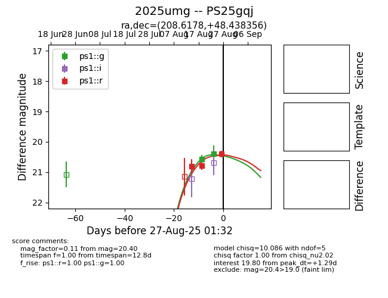

Target 2025umg at 2025-08-27 01:37, see:
TNS: wis-tns.org/object/2025umg
YSE: ziggy.ucolick.org/yse/transient_detail/2025umg
alt names
2025umg (yse,tns)
PS25gqj (panstarrs)
coordinates:
equatorial (ra, dec) = (208.6178,+48.43836)
galactic (l, b) = (97.2565,+65.42750)
photometry
last ps1::g=20.40, ps1::r=20.40
2 ps1::g, 3 ps1::r detections
